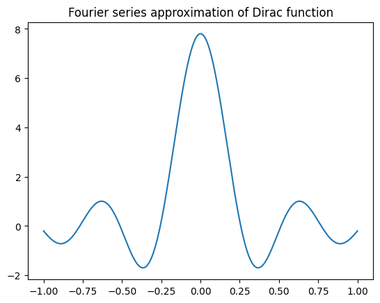

2024-05-09 · Signal Processing, Mathematics
Xin chào các bạn,
Trong bài post này, mình sẽ giới thiệu về chuỗi Fourier và biến đổi Fourier. Đây là một giải thuật có rất nhiều công dụng trong Vật lý, toán học, kỹ thuật viễn thông, kỹ thuật tự động, ... Ngoài ra, biến đổi Fouier có thể có rất rất nhiều ứng dụng ngoài đời thật. Vì nó rất quan trọng và có rất nhiều thứ ta có thể áp dụng nó nên mình sẽ đi sâu vào việc chứng minh nó để có thể giúp các bạn hiểu được giải thuật này hoạt động như thế nào.
Trước khi đi vào phần chứng minh, mình muốn dành một phần nhỏ để nói về ứng dụng của giải thuật Fourier.

Giả sử trong khâu kiểm định chất lượng motor trước khi xuất xưởng, chúng ta phải test thử motor chạy tốt hay không tốt để giao tới khách hàng. Việc này có thể test bằng việc cho motor chạy khoảng vài chục ngàn vòng và nghe tiếng phát ra của nó. Nếu nó chạy đều và ổn định thì nó là motor tốt còn trong lúc test nó rít lên hay phát ra tiếng kêu to hoặc nhỏ hơn bình thường, ta cần loại những sản phầm này. Những tiếng rít của motor có tần số rất cao và ta muốn phát hiện những tiếng rít này một cách tự động. Tuy nhiên, tín hiệu ta thu về có đồ thị như ở hình dưới, chỉ có đơn điệu đồ thị biên độ và thời gian.

Chuỗi Fourier sẽ giúp chúng ta tách sóng này ra thành các thành phần sin và cos với nhiều tần số khác nhau và biến đổi Fourier sẽ cho chúng ta biết đích xác có nững dải tần số nào trong tín hiệu này. Nhờ những tín hiệu này, ta có thể dễ dàng phân loại được chất lượng motor một cách tự động.
Chuỗi Fourier là tổng hợp của các tín hiệu sin và cos để có thể tạo nên tín hiệu gốc. Điều kiện để có thể phân tách được thành chuối Fourier là nó phải có tính tuần hoàn.
Và nó có công thức như sau:
Vì cos(0) = 1 và sin(0) = 0 nên ta có thể rút (1) thành như sau:
Đặt \theta_n = \frac{n\pi}{L} và áp vào (2) ta được:
Theo Euler, ta có:
Áp 2 công thức trên vào (3) ta được:
Khai triển từ (4), ta được:
Triển khai tiếp từ (5), ta được:
Ta biến đổi tiếp từ (6) như sau:
Đặt
Và ta có được công thức tổng quát của chuỗi Fourier:
Sau khi có được công thức tổng quát, ta cần tìm ra các hệ số a_n, b_n, c_n. Và ý tưởng tìm ra các hệ số này là tính trực giao (Orthogonality).
Ta có mệnh đề trực giao đối với một cặp hàm số điều hòa như sau:
Note: Mình sẽ chứng minh mệnh đề này ở sau cùng, bây giờ hãy tập trung vào chuỗi Fourier trước.
Bây giờ, ta hãy nhân cả 2 vế của (1) với cos(x), ta được:
Khai triển tiếp, ta được:
Tương tự, ta có b_n được tính như sau:
Và sau khi có giá trị a_n \text{ và } b_n, ta có thể phân tích bất kì dạng sóng nào thành một chuỗi sin và cos.
Ví dụ tính toán chuỗi Fourier:
Phân tích hàm dirac như hình dưới thành một chuỗi các sóng sin và cos

Như ở hình trên, có thể thấy rằng hàm dirac là hàm chẵn do f(x) = f(-x), vậy nên sẽ không tồn tại các các hàm sin. Vì vậy, hàm dirac sẽ chỉ bao gồm các dạng sóng cos.
Dựa vào quan sát trên, ta khai triển như sau:
Như đã chứng minh ở trên, a_0 được tính bằng công thức:
Biết được a_n và a_0, ta có thể xấp xỉ hàm dirac:
Ta được kết quả như sau nếu hiển thị nó matplotlib để trực quan hóa

Sau khi phân tích một tín hiệu thu được thành một chuỗi tín hiệu sin và cos, giờ ta muốn tìm xem trong chuỗi đó có những loại tần số nào? Fourier Transform sẽ cho chúng ta biết điều này.
Fourier Transform chỉ đơn thuần là một phép biến đổi được triển khai từ chuỗi Fourier, nếu đã nắm chắc lý thuyết về chuỗi Fourier thì phần này sẽ rất dễ dàng với các bạn.
Ta bắt đầu từ phương trình (7) ở trên, chuỗi Fourier được biểu diễn gọn gàng với công thức như sau:
Diễn giải bằng lời thì mỗi dạng sóng bất kì sẽ được phân tách thành một chuỗi tín hiệu với tần số góc \theta_n. C_n được tạo thành từ số phức (như chứng minh ở trên), vì vậy hệ số này sẽ bao gồm biên độ (Magnitude) và pha (phase) của mỗi tín hiệu \theta_n. Và chỉ cần tìm ra hệ số C_n này thì ta có thể dễ dàng tìm ra trong dạng sóng này có những biên độ và pha nào.
Theo như công thức thì ta có 3 trường hợp cho C_n:
Ở biến đổi Fourier, ta chỉ quan tâm đến biên độ và tần số, vì vậy việc C_{n-} hay C_{n+} sẽ không ảnh hưởng tới kết quả cuối cùng bởi vì kết quả đã được scale về cùng một tiêu chuẩn.
Ở bài này, mình sẽ chọn C_{n-} = \frac{a_n - j b_n}{2} \text{ } (13)
Ta thay (12) và (14) vào (13), được:
Áp dụng định lý Euler, ta được dạng tổng quát và quen thuộc sau:
Note: Phần hệ số \frac{1}{2 \pi} có thể được lược đi, và thông thường thì mình thấy người ta lược đi cho gọn.
Ở bài này, mình đã giới thiệu cho các bạn chuỗi Fourier, biến đổi Fourier và chứng minh chuỗi này bằng toán học. Thuật toán này làm được cực kì nhiều thứ hay ho, những ứng dụng của nó trong xử lý ảnh và deep learning sẽ được mình tổng hợp và trình bày trong các bài post tới. Giờ thì các bạn có thể phân tách bất kì hàm số nào thành chuỗi Fourier được rồi, chúc các bạn vui vẻ với nó nhé.
1. Deriving the Fourier Transform - BK Teach
2. Fourier Series - MIT OpenCourseWare
3. Fourier Transform - Wikipedia
4. Difference between Fourier Series and Fourier Transform
Cited as:
Le Hoang Viet. "Giải thích Fourier Transform". Le Hoang Viet's Homepage, May 2024. https://mikyx-1.github.io/blog/fourier-transform.html
Or the BibTeX entry:
@misc{le2024fouriertransform,
title = {Giải thích Fourier Transform},
author = {Le, Hoang Viet},
journal = {Le Hoang Viet's Homepage},
year = {2024},
month = {May},
url = {https://mikyx-1.github.io/blog/fourier-transform.html}
}← Back to the blog index. Send feedback by email.